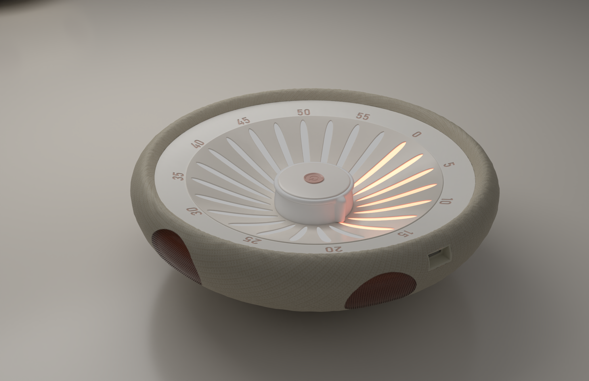
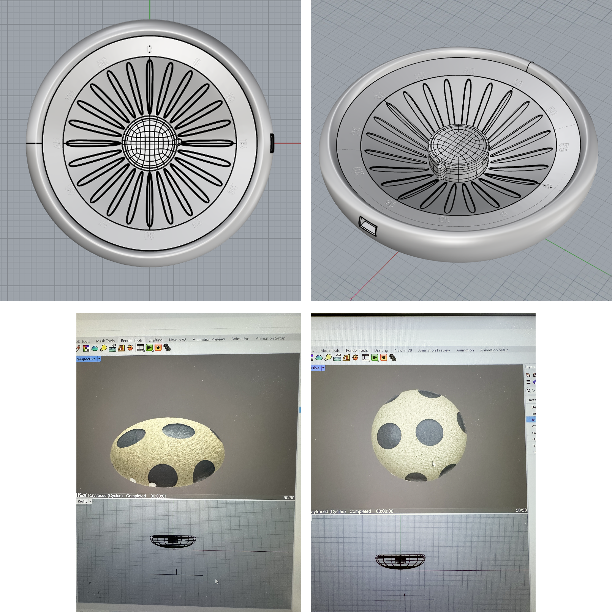
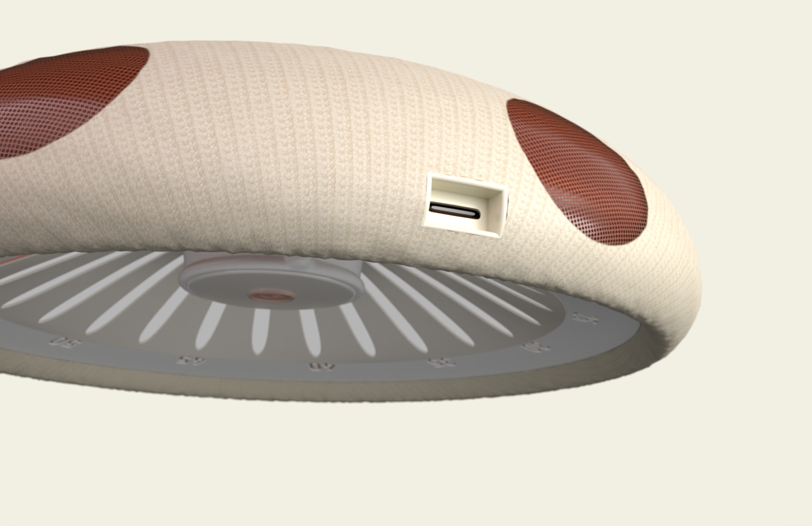
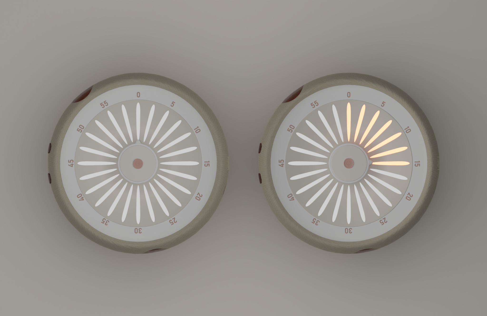
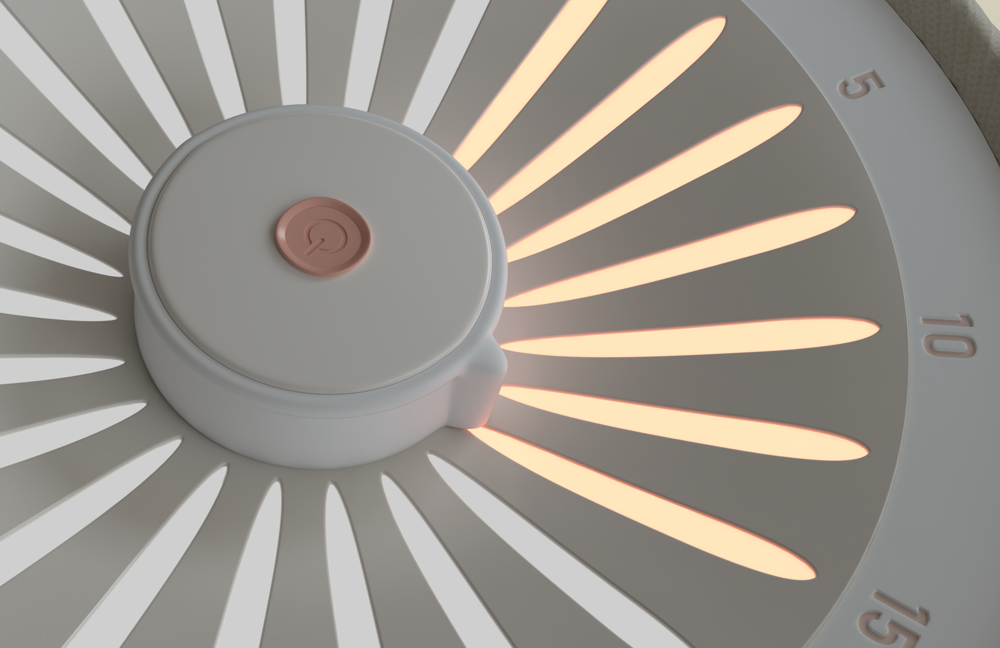
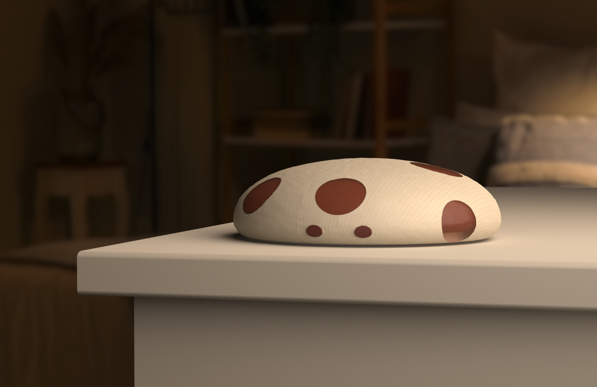

Timer Speaker
Fall 2025
Challenge:
Nighttime listening for audiobooks, podcasts, or white noise often requires navigating apps and screens to set timers, adding unnecessary friction and screen exposure before sleep.
Design:
Designed a bedside timer–speaker that combines Bluetooth audio with a simple dial-based physical timer. The tactile interface removes the need for app-based controls, while a soft knitted wool covering gives the object a warm, calming presence suitable for a bedroom environment. The product was modeled and rendered in Rhino.
Outcome:
Creates a more restful nighttime routine by replacing screen interactions with an intuitive physical interface, turning a common digital task into a simple, comforting bedside experience.

Modeling process




